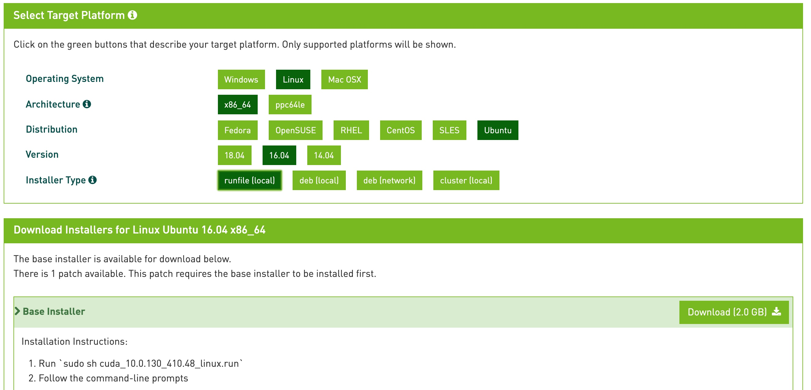

在阿里云上搭建基于NVIDIA显卡的深度学习环境，最主要的就是安装和配置GPU驱动、CUDA以及cuDNN。如果采用阿里云提供的自动环境配置方式，这个过程将十分简单。但是，如果想尝试手动进行各驱动和工具包的安装，期间会遇到不少问题。本文主要对笔者手动配置过程遇到的问题进行记录和分析，同时基于该过程，推荐给读者更方便可靠的搭建方案。
自动配置环境
在购买阿里云服务器ECS的过程中，可以在基础配置界面勾选自动安装GPU驱动，并选择需要的CUDA版本、Driver版本和CUDNN版本：

其中，阿里云比较人性化地为用户完成了版本适配的工作，当用户选定CUDA版本后，选择框中只显示能够适配的Driver版本，避免了后续使用过程中的问题。初次选购时，笔者直接如上图所示都选择了最高版本，于是也就踩了第一个坑。
按照上述配置购买、启动服务器后，可以通过nvidia-smi， nvcc -V 等指令查看相应驱动的安装情况，发现果然都完整地安装好了。于是笔者进一步配置python、tensorflow等环境，然后就开始进行神经网络训练。这时发现命令行输出如下的错误提示（笔者当时没有截图，这是找了网上的log）：
...
2019-10-15 19:19:41.465809: W tensorflow/stream_executor/platform/default/dso_loader.cc:55] Could not load dynamic library 'libcudart.so.10.0'; dlerror: libcudart.so.10.0: cannot open shared object file: No such file or directory
2019-10-15 19:19:41.465841: W tensorflow/stream_executor/platform/default/dso_loader.cc:55] Could not load dynamic library 'libcublas.so.10.0'; dlerror: libcublas.so.10.0: cannot open shared object file: No such file or directory
2019-10-15 19:19:41.465870: W tensorflow/stream_executor/platform/default/dso_loader.cc:55] Could not load dynamic library 'libcufft.so.10.0'; dlerror: libcufft.so.10.0: cannot open shared object file: No such file or directory
2019-10-15 19:19:41.465900: W tensorflow/stream_executor/platform/default/dso_loader.cc:55] Could not load dynamic library 'libcurand.so.10.0'; dlerror: libcurand.so.10.0: cannot open shared object file: No such file or directory
2019-10-15 19:19:41.465930: W tensorflow/stream_executor/platform/default/dso_loader.cc:55] Could not load dynamic library 'libcusolver.so.10.0'; dlerror: libcusolver.so.10.0: cannot open shared object file: No such file or directory
2019-10-15 19:19:41.465959: W tensorflow/stream_executor/platform/default/dso_loader.cc:55] Could not load dynamic library 'libcusparse.so.10.0'; dlerror: libcusparse.so.10.0: cannot open shared object file: No such file or directory
2019-10-15 19:19:41.468179: I tensorflow/stream_executor/platform/default/dso_loader.cc:44] Successfully opened dynamic library libcudnn.so.7
2019-10-15 19:19:41.468189: W tensorflow/core/common_runtime/gpu/gpu_device.cc:1641] Cannot dlopen some GPU libraries. Please make sure the missing libraries mentioned above are installed properly if you would like to use GPU. Follow the guide at https://www.tensorflow.org/install/gpu for how to download and setup the required libraries for your platform.
Skipping registering GPU devices...
...
分析log应该是CUDA和cuDNN的问题，可是明明它们都正确安装也都用命令行检查过了，那究竟是为何呢？
通过阅读博客，发现问题出在版本上。笔者使用的1.14版本的tensorflow-gpu目前仅支持10.0版本的CUDA，与10.1版本的不兼容。于是删了该服务器实例，重新按如下配置进行创建：

最终成功运行了项目，完成了对神经网络的训练。可以看到模型开始训练时，输出了相应了GPU信息：
2020-03-22 12:28:57.759152: I tensorflow/core/common_runtime/gpu/gpu_device.cc:1640] Found device 0 with properties:
name: Tesla P4 major: 6 minor: 1 memoryClockRate(GHz): 1.1135
pciBusID: 0000:00:07.0
2020-03-22 12:28:57.759419: I tensorflow/stream_executor/platform/default/dso_loader.cc:42] Successfully opened dynamic library libcudart.so.10.0
2020-03-22 12:28:57.760682: I tensorflow/stream_executor/platform/default/dso_loader.cc:42] Successfully opened dynamic library libcublas.so.10.0
2020-03-22 12:28:57.761784: I tensorflow/stream_executor/platform/default/dso_loader.cc:42] Successfully opened dynamic library libcufft.so.10.0
2020-03-22 12:28:57.762057: I tensorflow/stream_executor/platform/default/dso_loader.cc:42] Successfully opened dynamic library libcurand.so.10.0
2020-03-22 12:28:57.763478: I tensorflow/stream_executor/platform/default/dso_loader.cc:42] Successfully opened dynamic library libcusolver.so.10.0
2020-03-22 12:28:57.764538: I tensorflow/stream_executor/platform/default/dso_loader.cc:42] Successfully opened dynamic library libcusparse.so.10.0
2020-03-22 12:28:57.768303: I tensorflow/stream_executor/platform/default/dso_loader.cc:42] Successfully opened dynamic library libcudnn.so.7
2020-03-22 12:28:57.768428: I tensorflow/stream_executor/cuda/cuda_gpu_executor.cc:1005] successful NUMA node read from SysFS had negative value (-1), but there must be at least one NUMA node, so returning NUMA node zero
2020-03-22 12:28:57.769018: I tensorflow/stream_executor/cuda/cuda_gpu_executor.cc:1005] successful NUMA node read from SysFS had negative value (-1), but there must be at least one NUMA node, so returning NUMA node zero
2020-03-22 12:28:57.769583: I tensorflow/core/common_runtime/gpu/gpu_device.cc:1763] Adding visible gpu devices: 0
2020-03-22 12:28:57.772050: I tensorflow/stream_executor/platform/default/dso_loader.cc:42] Successfully opened dynamic library libcudart.so.10.0
2020-03-22 12:28:57.774939: I tensorflow/core/common_runtime/gpu/gpu_device.cc:1181] Device interconnect StreamExecutor with strength 1 edge matrix:
2020-03-22 12:28:57.774965: I tensorflow/core/common_runtime/gpu/gpu_device.cc:1187] 0
2020-03-22 12:28:57.774981: I tensorflow/core/common_runtime/gpu/gpu_device.cc:1200] 0: N
2020-03-22 12:28:57.776970: I tensorflow/stream_executor/cuda/cuda_gpu_executor.cc:1005] successful NUMA node read from SysFS had negative value (-1), but there must be at least one NUMA node, so returning NUMA node zero
2020-03-22 12:28:57.778472: I tensorflow/stream_executor/cuda/cuda_gpu_executor.cc:1005] successful NUMA node read from SysFS had negative value (-1), but there must be at least one NUMA node, so returning NUMA node zero
2020-03-22 12:28:57.779043: I tensorflow/core/common_runtime/gpu/gpu_device.cc:1326] Created TensorFlow device (/job:localhost/replica:0/task:0/device:GPU:0 with 7123 MB memory) -> physical GPU (device: 0, name: Tesla P4, pci bus id: 0000:00:07.0, compute capability: 6.1)
2020-03-22 12:29:00.535557: I tensorflow/stream_executor/platform/default/dso_loader.cc:42] Successfully opened dynamic library libcudnn.so.7
笔者选择的服务器采用按量计费的方式，一小时几块钱相对较便宜。看了眼包月的报价，包含一块GPU的服务器一个月要2k~7k不等，想必利润还是相当可观的。
手动配置环境（实际流程）
笔者使用自动配置方式完成环境搭建后，又尝试手动搭建了一遍。期间遇到了一些问题，这里就将整个过程记录一下。需要注意的是，这里仅仅复述了笔者搭建的过程，并不是最优方式，后续文章会推荐更合理的搭建方式。
手动过程主要包含NVIDIA Driver安装、CUDA Toolkit安装以及cuDNN安装，下面就一一对它们进行介绍。
一、NVIDIA Driver安装
安装GPU驱动时，需要根据显卡型号选择合适的驱动。可以去NVIDA官网搜索所需版本。
各类博客中更推荐从Ubuntu的apt-repository中安装，笔者也采用了这种方式，步骤如下：
# Add new repository in local
sudo add-apt-repository ppa:graphics-drivers/ppa
# Update local repository information
sudo apt update && sudo apt upgrade -y
# Show all devices which need drivers, and which packages apply to them.
ubuntu-drivers devices
(插入ubuntu-drivers devices执行结果图)
# Assuming that we install nvidia-418
sudo apt install nvidia-418
安装完成后需要重启系统，然后执行nvidia-smi指令。如果出现如下所示界面，就代表显卡驱动安装成功。

二、CUDA安装
1. 官网下载文件
首先查看CUDA与NVIDIA Driver版本兼容情况：

然后在官网下载相应版本，这里笔者选择的是CUDA 10.0版本。

2. 安装
下载完成后，按照官网提示进行安装。

在执行sudo apt-get install cuda 时，提示有链接访问不了，无法完成文件下载。于是按照命令行提示使用sudo apt-get install cuda --fix-missing 完成了工具包的安装。
完成安装后，发现先前安装的NVIDIA Driver被覆盖了，重新安装了440版本的驱动。这也表明一些安装方式在安装CUDA Toolkit的时候会同时安装NVIDIA Driver，这样的方式更加快速方便，但是大多博客都还是推荐分开安装的方式。同时，安装完成后发现下载的为CUDA 10.2版本，基于上文遇到的版本不兼容问题，于是决定重新下载CUDA。
目前还不清楚为什么选择10.0的包最后下载的却是10.2版本，难道是--fix-missing的原因？
网上博客更多地推荐下载.run文件，应该不会出现覆盖Driver等问题。
笔者是在本地下载文件后，再发送到服务端的，有些繁琐了。
3. 重新下载CUDA
重新下载CUDA时，换了一种方式，直接在服务端下载文件：
# 下载文件
wget https://developer.nvidia.com/compute/cuda/10.0/Prod/local_installers/cuda_10.0.130_410.48_linux
# 添加权限
sudo chmod +x cuda_10.0.130_410.48_linux
# 执行文件
./cuda_10.0.130_410.48_linux
安装过程中会出现几个选项要求用户选择，因为之前已经安装了NVIDIA Driver，所以其中第二个选项选择no。
Do you accept the previously read EULA?
accept/decline/quit: accept
Install NVIDIA Accelerated Graphics Driver for Linux-x86_64 387.26?
(y)es/(n)o/(q)uit: no
Install the CUDA 9.1 Toolkit?
(y)es/(n)o/(q)uit: y
Enter Toolkit Location
[ default is /usr/local/cuda-9.1 ]:
Do you want to install a symbolic link at /usr/local/cuda?
(y)es/(n)o/(q)uit: y
Install the CUDA 9.1 Samples?
(y)es/(n)o/(q)uit: y
Enter CUDA Samples Location
[ default is /home/mdt ]:
Installing the CUDA Toolkit in /usr/local/cuda-9.1 ...
Missing recommended library: libXi.so
Missing recommended library: libXmu.so
Installing the CUDA Samples in /home/mdt ...
Copying samples to /home/mdt/NVIDIA_CUDA-9.1_Samples now...
Finished copying samples.
===========
= Summary =
===========
Driver: Not Selected
Toolkit: Installed in /usr/local/cuda-10.0
Samples: Installed in /root/
Please make sure that
- PATH includes /usr/local/cuda-10.0/bin
- LD_LIBRARY_PATH includes /usr/local/cuda-10.0/lib64, or, add /usr/local/cuda-9.1/lib64 to /etc/ld.so.conf and run ldconfig as root
To uninstall the CUDA Toolkit, run the uninstall script in /usr/local/cuda-10.0/bin
Please see CUDA_Installation_Guide_Linux.pdf in /usr/local/cuda-10.0/doc/pdf for detailed information on setting up CUDA.
***WARNING: Incomplete installation! This installation did not install the CUDA Driver. A driver of version at least 384.00 is required for CUDA 10.0 functionality to work.
To install the driver using this installer, run the following command, replacing <CudaInstaller> with the name of this run file:
sudo <CudaInstaller>.run -silent -driver
Logfile is /tmp/cuda_install_2139.log
4. 系统路径修改
在/etc/profile或者~/.bashrc、~/.zshrc中添加：
# 可以先去check一下自己的/usr/local/下有没有或者是不是cuda-10.0
export PATH=/usr/local/cuda-10.0/bin:$PATH
export LD_LIBRARY_PATH=/usr/local/cuda-10.0/lib64$LD_LIBRARY_PATH
/etc/profile与~/.bashrc、~/.zshrc 关系：
5. 测试
重启系统后，通过nvcc -V查看CUDA版本信息。
三、cuDNN安装
1. 文件下载
在官网下载相应的cuDNN版本。这里同样要考虑兼容问题，笔者按照阿里云自动配置的版本选择了7.5.0的cuDNN。

由于官网下载需要账号注册，所以这里只能在本地下载后再发送给远程服务器。
2. 文件替换
将下载包解压，并拷贝到CUDA文件夹中：
# 解压文件
tar -xvf cudnn-10.1-linux-x64-v7.5.0.56.tgz
# 拷贝文件
sudo cp cuda/include/cudnn.h /usr/local/cuda/include/
sudo cp cuda/lib64/libcudnn* /usr/local/cuda/lib64/
# 添加权限
sudo chmod a+r /usr/local/cuda/include/cudnn.h
sudo chmod a+r /usr/local/cuda/lib64/libcudnn*
3. 测试
此时就可以查看CUDA和cuDNN版本信息：
# 查看CUDA版本
cat /usr/local/cuda/version.txt
# 查看cuDNN版本
cat /usr/local/cuda/include/cudnn.h | grep CUDNN_MAJOR -A 2
执行深度学习项目，或者创建新项目执行：
import tensorflow as tf
sess = tf.Session(config=tf.ConfigProto(log_device_placement=True))
如果如上述自动环境配置结果一样，输出信息中相关库都能正确加载，且包含GPU信息，那么环境就自动配置成功了。
手动配置环境（推荐流程）
一、NVIDIA Driver安装
与上文手动配置方式一致。
二、CUDA安装
1. 文件下载
在官网中选择.run文件下载，并按照提示步骤进行安装。

2. 安装
sh cuda_10.0.130_410.48_linux.run
因为已经完成NVIDIA Driver安装，所以采用如下选择方式：
Do you accept the previously read EULA?
accept/decline/quit: accept
Install NVIDIA Accelerated Graphics Driver for Linux-x86_64 387.26?
(y)es/(n)o/(q)uit: no
Install the CUDA 9.1 Toolkit?
(y)es/(n)o/(q)uit: y
Enter Toolkit Location
[ default is /usr/local/cuda-9.1 ]:
Do you want to install a symbolic link at /usr/local/cuda?
(y)es/(n)o/(q)uit: y
Install the CUDA 9.1 Samples?
(y)es/(n)o/(q)uit: y
Enter CUDA Samples Location
[ default is /home/mdt ]:
Installing the CUDA Toolkit in /usr/local/cuda-9.1 ...
Missing recommended library: libXi.so
Missing recommended library: libXmu.so
Installing the CUDA Samples in /home/mdt ...
Copying samples to /home/mdt/NVIDIA_CUDA-9.1_Samples now...
Finished copying samples.
===========
= Summary =
===========
Driver: Not Selected
Toolkit: Installed in /usr/local/cuda-10.0
Samples: Installed in /root/
Please make sure that
- PATH includes /usr/local/cuda-10.0/bin
- LD_LIBRARY_PATH includes /usr/local/cuda-10.0/lib64, or, add /usr/local/cuda-9.1/lib64 to /etc/ld.so.conf and run ldconfig as root
To uninstall the CUDA Toolkit, run the uninstall script in /usr/local/cuda-10.0/bin
Please see CUDA_Installation_Guide_Linux.pdf in /usr/local/cuda-10.0/doc/pdf for detailed information on setting up CUDA.
***WARNING: Incomplete installation! This installation did not install the CUDA Driver. A driver of version at least 384.00 is required for CUDA 10.0 functionality to work.
To install the driver using this installer, run the following command, replacing <CudaInstaller> with the name of this run file:
sudo <CudaInstaller>.run -silent -driver
Logfile is /tmp/cuda_install_2139.log
3. 修改系统路径
在/etc/profile或者~/.bashrc、~/.zshrc中添加：
# 可以先去check一下自己的/usr/local/下有没有或者是不是cuda-10.0
export PATH=/usr/local/cuda-10.0/bin:$PATH
export LD_LIBRARY_PATH=/usr/local/cuda-10.0/lib64$LD_LIBRARY_PATH
4. 测试
重启系统后，通过nvcc -V查看CUDA版本信息。
三、cuDNN安装
与上述手动环境配置中的步骤相同。
问题讨论
GPU计算型与GPU虚拟化区别
在阿里云选择GPU类型时，可以选择GPU计算型与GPU虚拟化。
-
GPU计算型
- 即相关的GPU为用户专属拥有，计算能力不会受到其他云上用户的影响。因此该方案的价格也会相对较高。
-
GPU虚拟化
- 即通过NVIDIA等底层管理软件将物理GPU按需切割，同时分配给多个虚拟机使用，虚拟机所使用的GPU被称之为虚拟GPU。在虚拟机中使用的vGPU计算能力来自物理GPU分割出来的配额，与CPU时间片的概念有些类似。
NVIDIA Driver、CUDA、cuDNN及TensorFlow关系
-
NVIDIA Driver
- NVIDIA显卡驱动，与其他驱动类似，需要通过驱动计算机才能发现并使用相关硬件
-
CUDA
- NVIDIA推出的用于自家GPU的并行计算框架，只有安装了该框架才能进行复杂的并行计算。主流的深度学习框架也都是基于CUDA进行GPU并行加速的。
-
cuDNN
- 是NVIDIA打造的针对深度神经网络的加速库，是一个用于深层神经网络的GPU加速库，完成了对卷积、池化、归一化和激活函数层等标准操作的快速实现。如果要用GPU训练模型，cuDNN不是必须的，但是一般会采用这个加速库。
-
TensorFlow
- 目前比较主流的机器学习框架，使用时需要依赖相应版本的CUDA及cuDNN。AMD也在近些年针对TensorFlow推出了支持自家显卡的工具包，但是主流还是使用NVIDIA显卡，及相应的工具包。
nvidia-smi指令与nvcc指令显示CUDA版本不一致原因
通过nvidia-smi和nvcc指令查看的CUDA版本可能存在不匹配的情况。其实是因为CUDA 有两种API，分别是运行时API和驱动API，即所谓的 Runtime API 与 Driver API。
nvidia-smi的结果除了有GPU驱动版本型号，还有CUDA Driver API的型号。而nvcc的结果是对应 CUDA Runtime API。
在安装CUDA 时候会安装3大组件，分别是NVIDIA驱动、toolkit和samples。NVIDIA驱动是用来控制GPU硬件的，toolkit里面包括nvcc编译器等，samples或者说SDK里面包括很多样例程序，如查询设备、带宽测试等等。上面说的 CUDA Driver API是依赖于NVIDIA驱动安装的，而CUDA Runtime API 是通过CUDA toolkit 安装的。